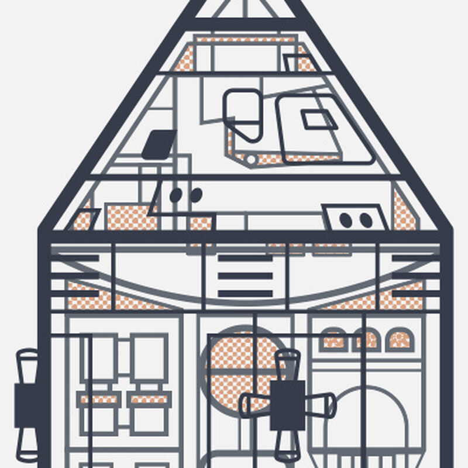
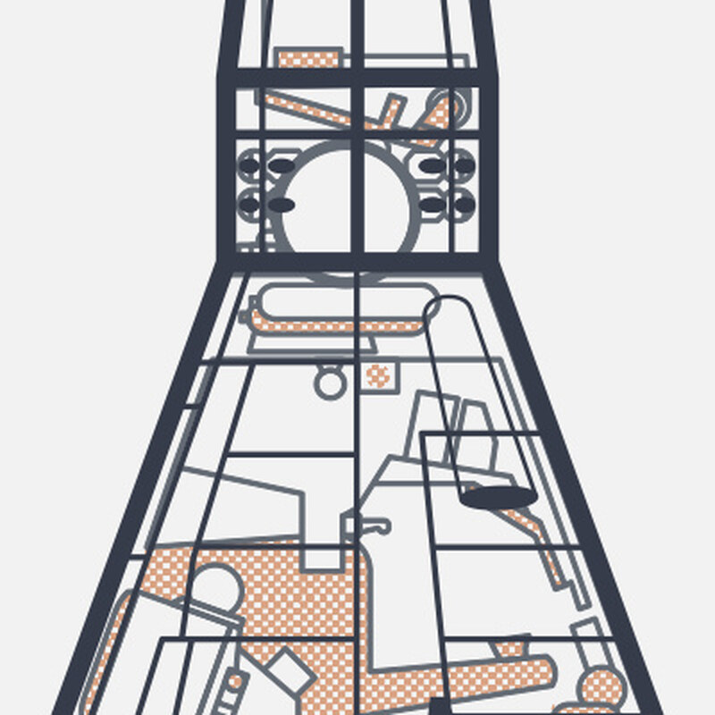
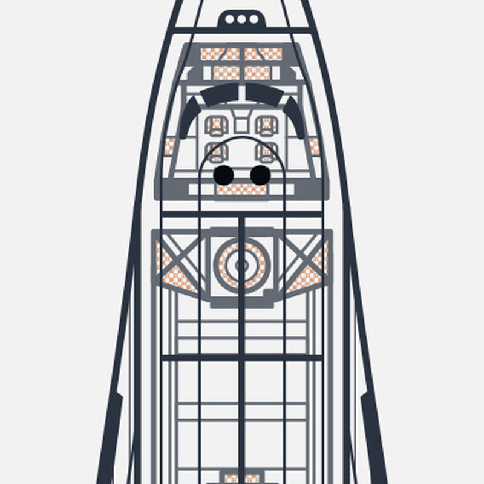
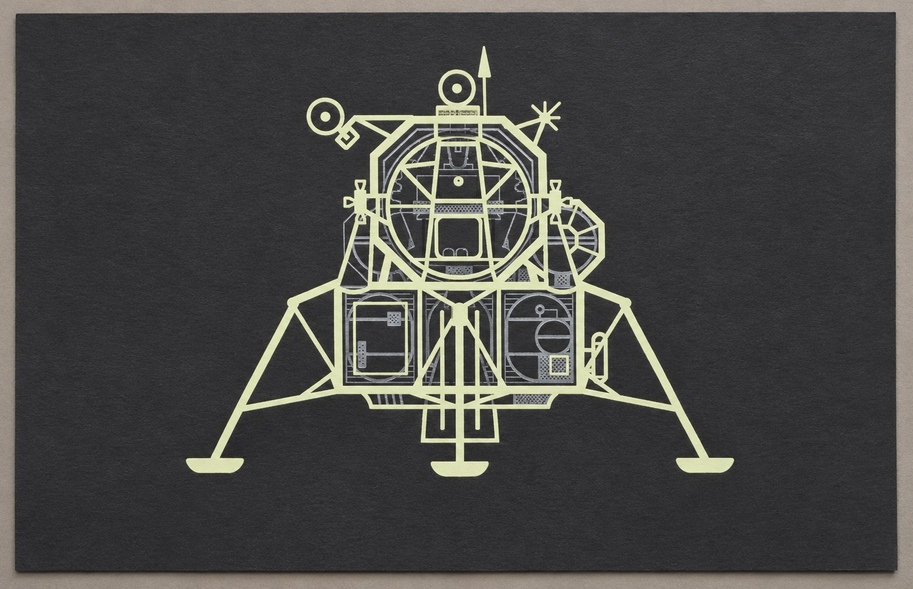
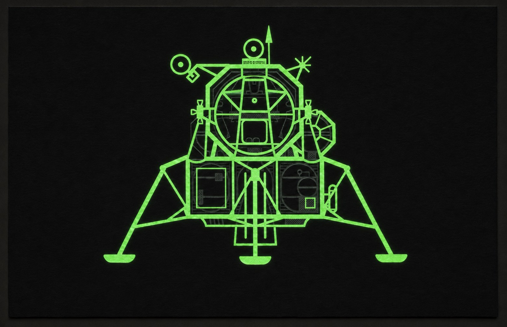
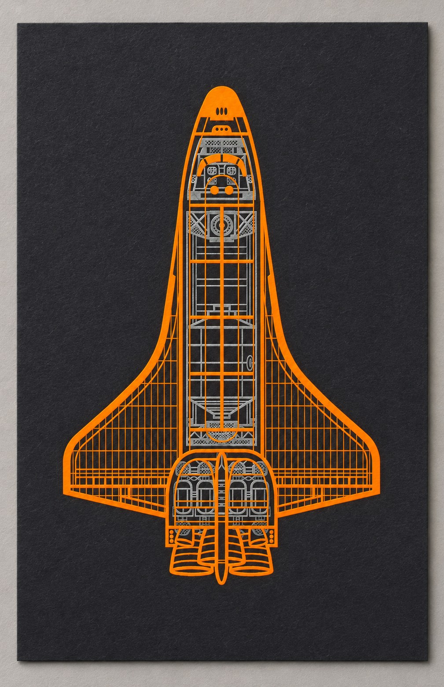
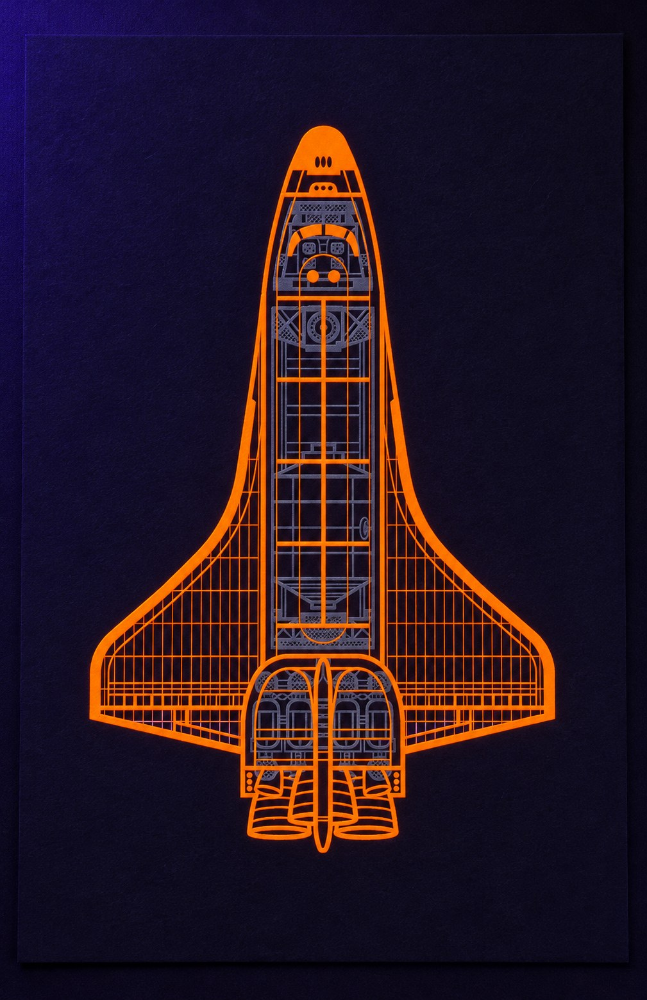

NASA Schematic Illustrations
Cutaway illustrations of NASA’s crewed spacecraft, drawn to the same rules so the six work as one set.
- My role
- Illustrator, self-initiated
- Series
- Six spacecraft, Mercury to Artemis
- Format
- Stickers, with art prints to come
- Year
- 2025–2026


The idea
NASA and outer space have always fascinated me. This series was a way to spend time with the machines themselves, drawing each crewed spacecraft inside and out.
The system
The same rules for every craft. Navy linework in a few set weights, one orange halftone for highlights, a light gray field and a small label underneath.



The series
In order of first flightScreen print mockups



